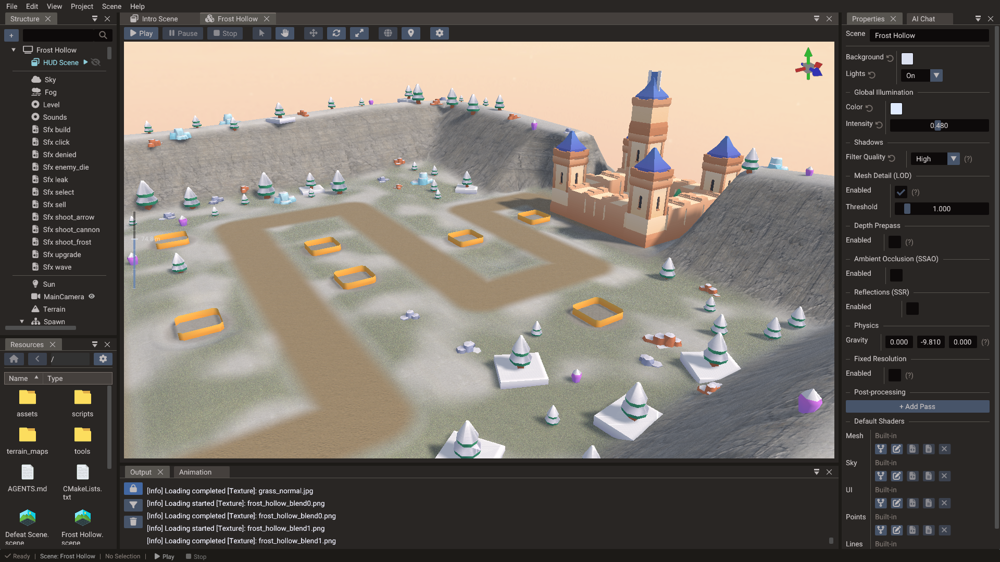
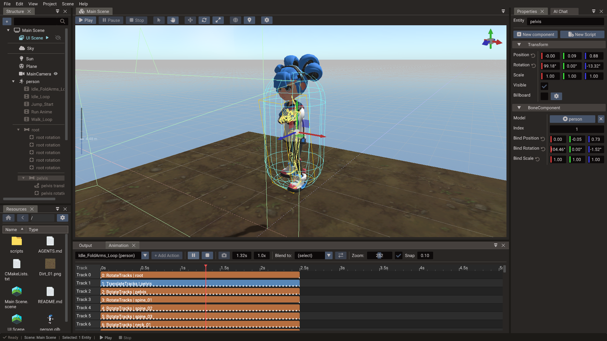
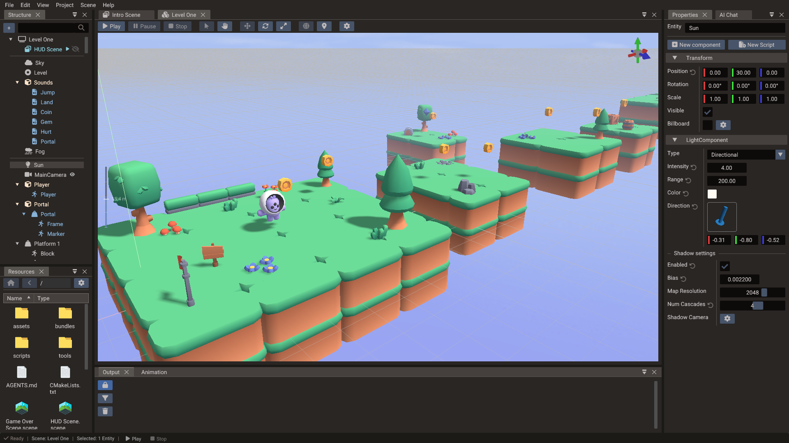

3D Graphics¶
Quantum provides a complete 3D pipeline with model loading, physically-based rendering, dynamic lighting, and environment effects.

Models¶
Quantum loads 3D models in GLTF and OBJ formats, and FBX through an automatic conversion to glTF (see FBX models). Import a model as a resource and add it to a scene as an entity, then position it with its transform.
Models support:
- Skeletal animation — animate rigged characters via bones
- Node animation — play transform clips on the imported glTF node tree
- Morph targets — blend between mesh shapes for facial animation and deformation

GLTF compatibility and limits¶
Skinned GLTF models are not limited by a fixed-size shader uniform block. Bone matrices are uploaded each frame through a storage buffer (Vulkan, Metal, Direct3D 11) or an unfilterable bone texture (OpenGL / OpenGL ES), so large skeletons skin correctly on every backend.
The CPU bone-matrix array still has a compile-time capacity, MAX_BONES (default
96). The editor grows that array for larger skins; export then raises MAX_BONES in
the generated CMake project to cover the largest skin in your scenes (never below 96).
A model loaded only at runtime that exceeds the exported capacity is rejected and the
loader writes an error to the log. Raise MAX_BONES yourself in a standalone engine
build if you spawn such models from code. See the
Model reference and
Build Options — Engine capacity macros.
Morph-target capacity is per mesh primitive and depends on the data exported for each target:
| Morph data | Maximum loaded targets |
|---|---|
| Position only | 8 |
| Position plus normal or tangent | 4 |
| Position, normal, and tangent | 2 |
The importer bases that capacity on the leading targets it actually loads and ignores
the unsupported tail. Sparse GLTF accessors are supported for morph-target attributes,
including sparse accessors without a dense base bufferView; Quantum expands them into
dense GPU vertex data during loading. See the Model reference
for the exact import behaviour.
GLTF node hierarchy¶
How a GLTF becomes entities depends on what the file contains:
| File contents | Scene layout |
|---|---|
| Animation clips, or more than one skin | The full node tree is imported. Every glTF node becomes a child entity (transform-only helpers, joints, and mesh nodes), parented as in the file. |
| Several mesh nodes, no clips and a single skin (or none) | One child mesh entity per mesh node, parented under the model root. Joints still use the legacy skeleton path when the file has one skin and no clips. |
| A single static mesh | Geometry lives on the Model entity itself. |
On both child paths the Model entity keeps only its Transform and ModelComponent. It
gets a MeshComponent only when the geometry lives on it: a single mesh, an OBJ, or a
merged model.
On the full-tree path, bone and mesh mappings point into those node entities rather than sitting in a separate skeleton. Animation channels target the node they were authored against, so transform-only nodes (not just joints) play back. Models may use more than one skin: each skinned mesh keeps its own joint order and inverse-bind matrices, and the renderer builds that mesh's bone matrices from those joints.
Imported models with child nodes start collapsed in the Structure panel. Expand the model when you need to select a specific node, joint, or child mesh.
On the child-mesh path the parts are yours to arrange: nest them under each other or under a plain entity inside the model, and the scene saves that layout. Full node-tree imports keep joints, helper nodes, animated parts, and rigid parts that inherit a node's animation where the file authored them; skinned parts and rigid parts the file does not animate can be moved, onto bones included, and any entity can be attached to a bone. See Structure — Organizing the parts of a model.
Merging static model meshes¶
A GLTF with several mesh nodes normally keeps those meshes on child entities. That
hierarchy is useful for editing parts separately, but
GPU instancing draws only the geometry on the
entity that owns InstancedMeshComponent.
For static props (no skinning, morph targets, or embedded animations), bake the children into the root:
- Select the Model in the Structure panel.
- Right-click and choose Merge static model.
- Add Instanced Mesh (or set
ModelComponent::mergeStaticMeshesbefore reload in C++ / exported project code).
Restore model mesh children reverses the flatten. Merge is refused for skinned, animated, or morph-target models, and when the flattened result would exceed the root submesh limit. It is also refused while the parts are rearranged inside the model; use Reset mesh parenting first.
Mesh settings (lighting, shadows, detail levels, transparency and the custom shaders) follow the geometry. A reload of the same file gives each part the settings saved for its node, found by name and then by index, so reordered nodes keep theirs. Restoring gives the merged mesh's settings to every part, and merging takes those of the first part. A different file is a fresh import, so the meshes it creates start with the defaults.
Reloading a rearranged model¶
A model normally rebuilds its child entities on every reload: the old parts are deleted and the file creates fresh ones. Re-assigning the same model file — the usual step after re-exporting from your DCC — keeps what you arranged, in one of two ways depending on how the file imports.
Child-mesh models (static, or a single skin without clips) whose parts have been rearranged keep the existing part entities and refresh their geometry and materials in place. Assigning a different file, merging, or restoring still rebuilds the parts.
Whenever the file loads against existing part entities — that in-place reload, or reopening a saved scene — each part is paired with a mesh node of the file by node name, so re-exporting with nodes reordered keeps every part on its own geometry. The pairing goes:
- A part whose name still matches the node at its saved index keeps that node.
- Remaining nodes claim the part with the same name, wherever it moved to.
- Nodes without a name, and parts you renamed in the editor, fall back to the saved index.
A part left without a node stays in the scene as a plain entity and no longer belongs to the model (a warning names it in the log); delete it or keep it as you see fit. A new node in the file gets a new part under the model root. Kept parts keep the transform saved in the scene — the file's node transform is applied only when a part is created — and their submesh overrides are preserved.
Full node-tree models cannot be refreshed in place, because the node transforms, joints, and animation clips all come from the file. They are rebuilt, and the editor then puts your arrangement back by node name: every part you moved returns to the node or group you left it under, keeping the local transform you gave it. A part the re-export turned into something that may no longer move — it gained keyframes, or now sits under an animated node — stays where the new file puts it, with a warning in the log. Part entities are new after this kind of reload, so entity references that pointed at a part have to be re-assigned.
Attachments survive both kinds of reload. Anything you hung on a bone, a helper node, or a part — a light, a camera, an empty holding a prop, another model — is kept and re-attached to the same-named node with the same local offset, on static models too. The node is matched by name as well as index, so it follows a re-export that reorders nodes; if the node is gone from the file, the entity is left directly under the model with a warning.
Assigning a different model file rebuilds everything from that file and does not carry attachments or arrangements over.
FBX models¶
The engine does not read FBX itself. The editor converts each FBX file to a binary glTF,
and the engine loads that conversion wherever the FBX is used, so scenes, components, and
scripts keep the .fbx path:
A script can load any FBX in the assets directory, because Play and export convert them all first. An FBX without a conversion does not load, so an engine build used without the editor cannot load FBX at all.
While you work, conversions live in .quantum/imported/, which mirrors the assets
directory (characters/hero.fbx becomes .quantum/imported/characters/hero.fbx.glb) and is
not committed. An exported game ships each one beside its FBX as hero.fbx.glb and leaves
the .fbx out. See Export — FBX models.
The editor converts an FBX the first time it is used (dropped into a scene, picked for a component or a terrain layer, or previewed in the Resources Browser), when Play starts, and on export. It converts it again when the FBX or one of its textures changes. Models in open scenes then reload the way a re-assigned file does, keeping your arrangement (see Reloading a rearranged model). Reimport in the Resources Browser forces a conversion.
Texture paths stored in an FBX often point at the artist's machine, so each texture is looked up in this order:
- The paths stored in the FBX, when they lead inside the assets directory.
- The file name in the FBX's folder, in its
textures,images,materials,maps, ortexsubfolder, and in the same places of each parent folder up to the assets root. - The stored paths outside the assets directory.
A texture found inside the assets directory stays a separate file that the conversion refers to. One found only outside is embedded in the conversion. A texture that is not found is left out with a warning in the Output panel, and adding it later converts the FBX again. Maps that glTF keeps in one image are combined into a new embedded image: an opacity map goes into the base colour's alpha, and separate roughness and metalness maps are packed together.
| FBX content | Converted to |
|---|---|
| Units and axes | Meters, Y up |
| Meshes and materials | glTF meshes with PBR materials. Instances of one mesh that use different materials keep them |
| UV sets | The first two. Textures on a third set use the first |
| Vertex colours | Vertex colours |
| Skins | Up to four joint influences per vertex |
| Blend shapes | Morph targets with position offsets, up to 8 rendered (see the capacity table above). An in-between shape keeps only its full-weight target |
| Animation stacks | Clips sampled at 30 frames per second, blend-shape weights included |
Texture tiling and offset are not converted, and cameras and lights in the file become empty nodes.
PBR materials¶
Rendering is physically based (PBR), producing realistic surfaces that respond correctly to lighting. Materials drive how light interacts with each surface, supporting photorealistic results.

Materials can use albedo, normal, roughness, metallic, and emission data. Imported GLTF materials are converted into the engine material representation during loading; editor-created materials are serialized with the project and baked into exported output.
GLTF OPAQUE, MASK, and BLEND alpha modes are preserved. For masked materials,
the GLTF alphaCutoff value (default 0.5) controls the combined base-colour factor
and texture alpha test in both the visible surface and its shadow/depth passes. Blended
submeshes keep depth testing but disable depth writes in the colour pass so overlapping
translucent surfaces composite instead of occluding each other. When auto-transparency
marks the mesh transparent, the SSAO depth pre-pass and SSR G-buffer skip it; shadow
maps still render it. In the editor, expand Mesh → Submesh → Material to change
Alpha Mode and Alpha Cutoff. See the
Material reference for the mode
behaviours.
A mesh with Face Culling off is lit on both sides: the back face shades with its
normal (and normal map) flipped toward the viewer, as glTF specifies for double-sided
materials, instead of appearing in shadow. Leaf Transmission
(foliageTransmission, 0–1,
default 0) adds the light that passes through a thin surface such as a leaf when the
sun is behind it, scaled by the base colour and the same shadow term as direct lighting.
Set it per submesh in the editor, or author it in the glTF as the material extra
quantum_foliage_transmission; ordinary glTF materials are unaffected.
Editing an imported model's submeshes¶
A model's geometry and materials are rebuilt from its source file every time the scene loads, so the file — not the scene — is what the mesh normally follows. Editing a submesh property of an imported model in the editor records an override on the model: the edited field keeps your value across scene restarts, play/stop, and exported builds, while every field you left alone still follows the source file.
That applies to the whole Submesh section — material values and textures, linked
.material files, Face Culling, Texture Shadow, and Primitive Type — on the
Model entity itself and on the child mesh entities a multi-node GLTF creates.
Because only the edited fields are pinned, re-exporting the model from your DCC still propagates everything else. Change a texture in Blender and re-export: meshes where you only tweaked base colour pick up the new texture and keep your colour.
Overrides are matched to the primitive they came from by its GLTF node and material name (the material name alone for OBJ), not by position. Reordering nodes or primitives in the source file therefore keeps each edit on the right geometry. When that identity no longer resolves to exactly one primitive — the node or material was renamed or removed, or two of them now share a name — the override is dropped instead of applied to whichever geometry took the old slot. Re-apply the edit after that kind of re-export.
Assigning a different model file to the entity is a fresh import and clears the overrides. Reloading the same file — Merge static model or Restore model mesh children — keeps them.
Scenes authored before overrides existed are migrated the first time they load: the values saved in the scene are compared against the source file, and only the fields that really differ become overrides.
Shared material files (.material)¶
Each mesh submesh can reference a standalone .material file in your project instead
of embedding values only inside the scene. Multiple meshes can link to the same file so
they always stay in sync — change the file once and every linked mesh updates.
Create a material file from the editor:
- Select a mesh and open its Material row in the Properties window.
- Tune base colour, textures, metallic, and roughness as needed.
- Drag the material preview from Properties into the Resources Browser.
- The editor creates
Material.material(orMaterial_1.material, etc.) in the folder you drop on and links the submesh to that file.
Apply an existing material file:
- Drag a
.materialfile from the Resources Browser onto a mesh in the Scene view, or - Drop it onto the Material field in Properties (live preview while hovering).
Linked materials reload automatically when the file changes on disk. Use the unlink button (chain icon) next to the material name in Properties to copy the values back into the scene as a local, unlinked material.
See Resources Browser — Material files and Properties — Mesh materials for the full workflow.
Lighting and shadows¶
Quantum supports multiple light types with dynamic shadows, so moving objects cast and receive shadows in real time.

| Light type | Best use |
|---|---|
| Directional | Sunlight or broad outdoor lighting |
| Point | Lamps, torches, explosions, and local lights |
| Spot | Flashlights, cones, and focused effects |
A scene can have any number of lights, but only six are used at once: past that,
directional lights come first, then the ones nearest the camera (see
Rendering Pipeline — More lights than MAX_LIGHTS).
Directional lights support cascaded shadow maps. Tune edge smoothness with
Scene::setShadowQuality (NONE / LOW / MEDIUM / HIGH PCF filtering).
Projected spot-light masks¶
A spot light uses a circular inner/outer cone by default. To project an arbitrary shape, select the spot light and assign an image to Light → Mask. No separate shape mode is needed: an assigned mask automatically becomes the complete light shape, and clearing it restores the circular cone.
Mask alpha controls light intensity when the image contains transparency; otherwise the engine uses luminance (black is unlit and white is fully lit). The Angle Cone property sets the vertical projection angle, while the image aspect ratio sets its width. The scene gizmo and spot shadow frustum use that same orientation and aspect ratio.
For C++ and Lua setup, in-memory masks, and clearing a mask at runtime, see Light.spotMask.
Enable screen-space ambient occlusion with Scene::setSSAOEnabled(true) to add soft
contact shading in creases and corners. It affects ambient/indirect light only — see
Rendering Pipeline — Ambient occlusion (SSAO).
Environment¶
Add atmosphere to your scenes with:
- Fog — depth-based atmospheric fog
- Sky system — a configurable cubemap background that also drives image-based lighting (IBL) for reflective surfaces
- Reflection probes — local, box-shaped reflection environments for interiors and enclosed areas
- Water — animated water surfaces with waves, reflections, refraction, and foam
Sky and reflections¶
A Sky entity provides the scene background and the lighting environment for IBL. Assign a cubemap texture (six faces or a single cross layout). Meshes that should pick up sky reflections and indirect colour need Receive IBL enabled on their Mesh component — see Rendering Pipeline — IBL.
Use Visible on the Sky component when you want IBL without drawing the sky dome (for example, a studio HDR used only for reflections). The sky texture still generates irradiance and prefiltered maps either way.
IBL gives soft, environment-wide reflections suited to curved and rough surfaces. For a local environment (a room, garage, or cave) use a Reflection Probe; for a sharp, mirror-like reflection on a flat surface, add a Mirror — see below.
Reflection probes¶
Sky IBL reflects the same environment everywhere, which looks wrong indoors. A Reflection Probe (Structure panel's create menu) captures the scene at its own position and applies that environment to meshes inside a box-shaped influence volume, with box-projected (parallax-corrected) reflections that stay anchored to the room. Probes can be static — an authored cubemap or a one-time capture at load — or dynamic, re-capturing at runtime on move, on an interval, or on demand. A mesh that wraps around a probe would show up inside its own reflection, so turn off its Render in Probes flag to keep it out of captures. See Rendering Pipeline — Reflection probes.
Mirrors¶
For a true planar reflection on a flat surface — a mirror, still water, or a polished floor — add a Mirror from the Structure panel's create menu. It produces an upright reflective wall that reflects the scene from the viewer's mirrored viewpoint, with no camera or texture setup required. Because a mirror shows the side of an object facing it — the side a single key light usually misses — reflected meshes want Receive IBL or a fill light to avoid looking washed out. See Rendering Pipeline — Mirrors and planar reflections for how it works, its lighting, and its performance cost.
Water¶
For a sea, a lake, or a pool, add a Water from the Structure panel's create menu. It
draws an animated surface at the entity's height: Gerstner waves you shape with a height,
length, direction, and steepness, scrolling ripples, sky or planar reflections, refraction
of the scene behind it, shore and crest foam, and a fade into the water when the camera
goes below the surface. Dynamic 3D bodies with a Buoyancy above 0 float on its
waves, and scripts can read the surface with Water.getHeight. See
Rendering Pipeline — Water,
Physics — Buoyancy, and the Water reference.
Cameras¶
Cameras define the viewpoint into a 3D scene. Position and orient a camera entity, and set it as the scene's active camera to control what the player sees.

Cameras can be perspective, orthographic, or UI cameras. A scene owns an active camera entity; editor scene cameras are separate from game cameras so you can navigate while preserving the player's view.
Additional features¶
The runtime also supports particle systems, terrain with level-of-detail (LOD), automatic mesh detail levels for distant props, and mesh instancing for efficiently rendering many copies of the same geometry. An optional depth prepass cuts overdraw on dense opaque scenes.
Next steps¶
Add interactivity with Physics, or learn how to ship your game in Export Window.